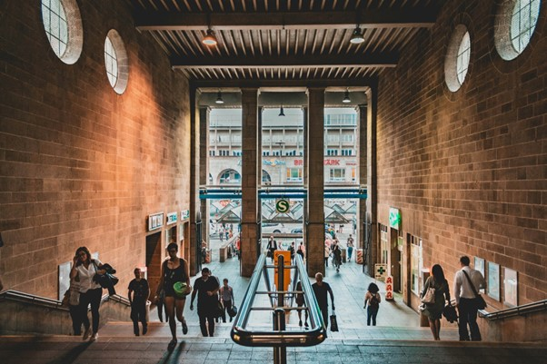
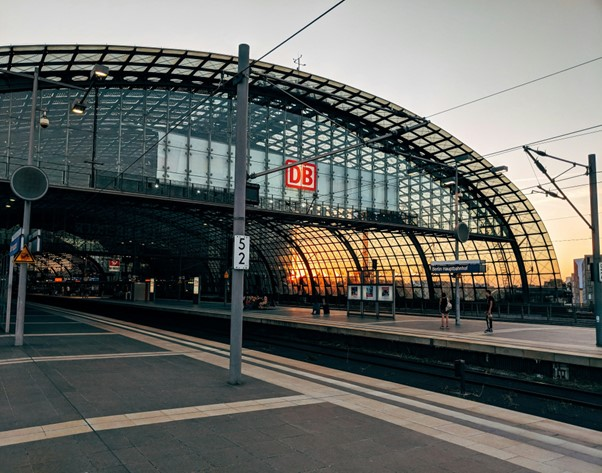
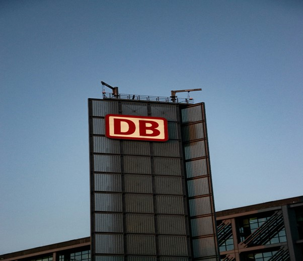
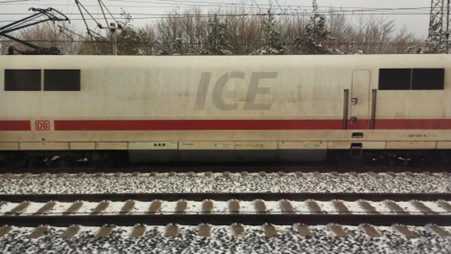
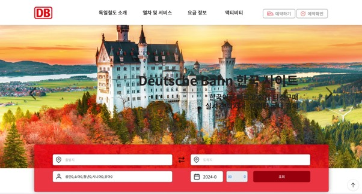

한국인 분들뿐만 아니라 전 세계의 많은 사람들이 유럽여행을 자신의 일생에서 반드시 해보고 싶은 버킷리스트에 담아두는 사람들은 정말 많습니다.
그중에서 독일은 매년 많은 관광객들이 방문하는 유럽의 국가 중 하나인 국가로 2014년 기준으로 매년 약 3300만 명의 관광객들이 방문하는 유럽 내에서도 손꼽히는 관광 선진국입니다.
이런 독일을 방문하는 많은 관광객들은 대체로 독일의 여러 도시를 방문하거나 주변 국가를 방문하는 관광객들이 많습니다.
이런 관광객들이 독일 내에서의 이동이나 독일에서 주변 국가로 이동하기 위해서는 비행기, 기차, 자동차 와 같은 대중교통을 필수적으로 이용해야 합니다.
오늘은 그중에서 독일의 철도와 기차에 대해 알아보겠습니다!
먼저 기차가 이동하기 위해서는 철도가 있어야 합니다. 따라서 독일의 철도에 대해 간략하게 소개를 하겠습니다. 독일의 철도는 총연장 48.215km를 보유하여 총연장으로는 세계 6위에 위치하고 있습니다.
사실상 유럽 교통의 중심에는 독일이 있다고 해도 과언이 아니죠.
이런 독일의 철도는 1831년부터 소규모 철도를 만드는 것을 시작하여 세계대전을 딛고 현재 유럽의 국가들을 연결하는 하나의 교통망으로 커졌다고 볼 수 있습니다.
또한 사람이 이동하는 교통망으로 작동하는 것 말뿐만 아니라 사물을 운송하는 역할도 수행하며 다른 철도 선진국인 영국과 이탈리아 등 국가에 진출하여 유럽 화물 수송에 대한 점유율 대다수를 차지하고 있습니다.
그러면 철도에 대해 알아봤으니까 이제 본격적으로 독일의 기차에 대해 알아봅시다!!
그전에 한국에는 한국철도공사, 즉 코레일이라고 불리는 국가에서 운영하는 철도 기업이 있습니다.
독일에서는 독일 철도 주식회사(Deutsche Bahn AG)라고 불리는 공기업으로 독일정부에서 운영하는 기업입니다.
즉 대한민국에서 기차를 운행하고 관리하는 곳이 코레일이라면 독일에서는 DB(Deutsche Bahn AG)라고 할 수 있습니다.
그러면 이제 독일 철도청에서 운영 중인 기차들을 알아봅시다!
현재 철도청에서 운영 중인 기차의 종류는 3종류로 초고속 열차 ICE , 고속 열차 IC/EC , 지역 열차 RE/RB입니다.
첫 번째 소개할 기차인 초고속 열차 ICE는 세계에서 가장 빠른 열차 중 하나이며 최고 시속 300km가 넘는 속도를 가진 열차입니다.
두 번째 기차인 고속 열차 IC(Inter city) EC(Euro city)로 이 두 열차는 독일 내부 또는 다른 국가로 이동이라는 정해진 목표가 다른 열차입니다 다만 두 기차 모두 200km 정도의 속도를 가진 기차입니다.
마지막으로 세 번째 기차인 지역 열차RE(Regional express)/RB(Regional Bahn)는 대한민국의 무궁화처럼 지역의 소도시를 많이 정차하여 주행하는 기차입니다.
이처럼 독일에는 독일 내부를 주행하는 열차뿐만 아니라 독일 외부 다른 유럽권 국가로 갈 수 있는 철도를 운행하여 열차들이 독일을 거쳐서 이동하는 유럽 내 교통네트워크 역할을 수행하고 있습니다.
독일의 철도와 기차에 대해 알아봤습니다, 그럼 이제 독일의 기차를 예매하는 방법과 기차에서 주의해야 할 것들도 간략하게 소개해 드리겠습니다.
먼저 많은 여행객들이 오미오(OMIO)를 통해 기차표나 교통수단을 예매하는데 오미오(OMIO)를 통해 예매를 했을 때 독일 철도청 공식 사이트에서 예매를 했을 때 보다 수수료가 붙기 때문에 제가 추천하는 방법은 독일 철도청 사이트에서 예매를 하는 방법이 제일 좋은 선택지라고 생각합니다!
불과 몇 년 전에는 독일 철도청 한국 공식 사이트가 존재하지 않았지만 현재는 독일 철도청 한국 공식 인증 사이트 가 있기 때문에 안전하고 편리하게 기차표를 예매할 수 있습니다!
또한 도이체반 공식 사이트와 도이체반 공식 앱을 앱스토어에서 다운로드할 수 있기 때문에 간편하게 연동하여 사용하실 수 있습니다!!
마지막으로 도이체반으로 국가를 이동하거나 독일 여행을 하시는 분들이 비행기가 아니라고 여권을 소지하지 않거나 캐리어에 넣어 놓는 경우가 대다수인데 기차를 타고 있을 때 기차라 하더라도 여권 검사가 있을 수도 있으니까 여권을 항상 소지해 주면 좋을 거 같습니다.
그리고 독일의 기차는 한국의 기차랑 너무 다릅니다 예를 들어 한국의 기차는 조용한 분위기가 대중적인데 독일의 기차는 자유분방한 분위기의 기차이기 때문에 독일의 기차에는 조용한 분위기를 원하는 사람을 위해 Quiet Zone이 마련되어 있어서 한국과 많이 다르다고 볼 수 있습니다.
여러분이 유럽에서 독일을 거쳐서 이동하게 된다면 항상 마주하게 될 독일의 기차와 예매 방법에 대해 알아봤습니다!
여러분이 유럽을 방문하게 되어 독일의 기차를 이용하는 상황에서 오늘 알게 된 정보가 도움이 되었으면 좋겠습니다!!
감사합니다!!